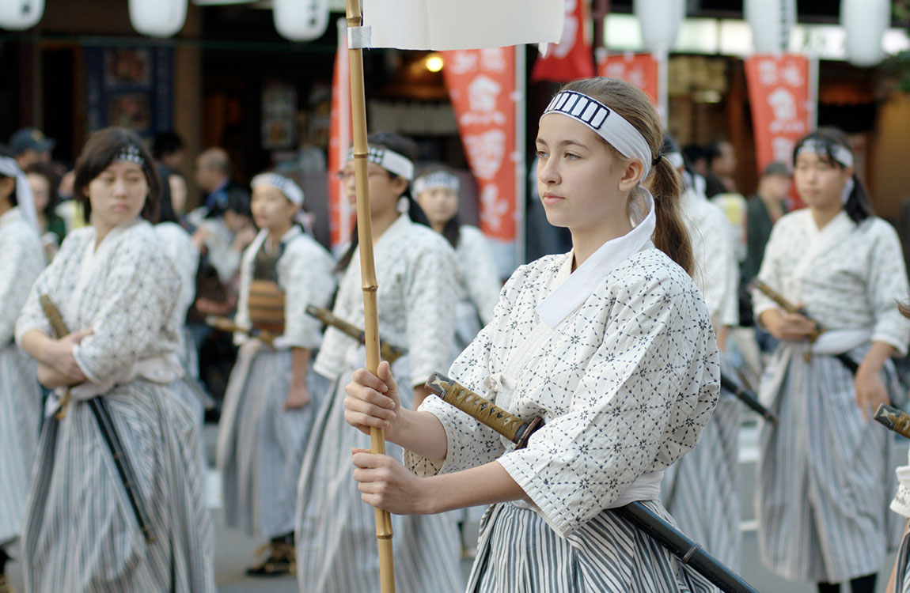

This is a glorious headline
Nomen Nescio & Anonymous Coward
22nd of March 2014
When we compare the individuals of the same variety or sub-variety of
our older cultivated plants and animals, one of the first points which
strikes us is, that they generally differ more from each other than do
the individuals of any one species or variety in a state of nature. And
if we reflect on the vast diversity of the plants and animals which have
been cultivated, and which have varied during all ages under the most
different climates and treatment, we are driven to conclude that this
great variability is due to our domestic productions having been raised
under conditions of life not so uniform as, and somewhat different from,
those to which the parent species had been exposed under nature. There
is, also, some probability in the view propounded by Andrew Knight, that
this variability may be partly connected with excess of food. It seems
clear that organic beings must be exposed during several generations to
new conditions to cause any great amount of variation; and that, when
the organisation has once begun to vary, it generally continues varying
for many generations. No case is on record of a variable organism
ceasing to vary under cultivation. Our oldest cultivated plants, such
as wheat, still yield new varieties: our oldest domesticated animals are
still capable of rapid improvement or modification.

Culture day, Tokyo, 2010.
As far as I am able to judge, after long attending to the subject, the
conditions of life appear to act in two ways—directly on the whole
organisation or on certain parts alone and in directly by affecting the
reproductive system. With respect to the direct action, we must bear in
mind that in every case, as Professor Weismann has lately insisted,
and as I have incidently shown in my work on "Variation under
Domestication," there are two factors: namely, the nature of the
organism and the nature of the conditions. The former seems to be much
the more important; for nearly similar variations sometimes arise under,
as far as we can judge, dissimilar conditions; and, on the other hand,
dissimilar variations arise under conditions which appear to be
nearly uniform. The effects on the offspring are either definite or in
definite. They may be considered as definite when all or nearly all the
offspring of individuals exposed to certain conditions during several
generations are modified in the same manner. It is extremely difficult
to come to any conclusion in regard to the extent of the changes which
have been thus definitely induced. There can, however, be little doubt
about many slight changes, such as size from the amount of food,
colour from the nature of the food, thickness of the skin and hair from
climate, etc. Each of the endless variations which we see in the plumage
of our fowls must have had some efficient cause; and if the same cause
were to act uniformly during a long series of generations on many
individuals, all probably would be modified in the same manner. Such
facts as the complex and extraordinary out growths which variably
follow from the insertion of a minute drop of poison by a gall-producing
insect, shows us what singular modifications might result in the case of
plants from a chemical change in the nature of the sap.
In definite variability is a much more common result of changed
conditions than definite variability, and has probably played a more
important part in the formation of our domestic races. We see in
definite variability in the endless slight peculiarities which
distinguish the individuals of the same species, and which cannot be
accounted for by inheritance from either parent or from some more remote
ancestor. Even strongly-marked differences occasionally appear in the
young of the same litter, and in seedlings from the same seed-capsule.
At long intervals of time, out of millions of individuals reared in the
same country and fed on nearly the same food, deviations of structure so
strongly pronounced as to deserve to be called monstrosities arise; but
monstrosities cannot be separated by any distinct line from slighter
variations. All such changes of structure, whether extremely slight or
strongly marked, which appear among many individuals living together,
may be considered as the in definite effects of the conditions of life
on each individual organism, in nearly the same manner as the chill
effects different men in an in definite manner, according to their
state of body or constitution, causing coughs or colds, rheumatism, or
inflammation of various organs.
With respect to what I have called the in direct action of changed
conditions, namely, through the reproductive system of being affected,
we may infer that variability is thus induced, partly from the fact of
this system being extremely sensitive to any change in the conditions,
and partly from the similarity, as Kolreuter and others have remarked,
between the variability which follows from the crossing of distinct
species, and that which may be observed with plants and animals when
reared under new or unnatural conditions. Many facts clearly show how
eminently susceptible the reproductive system is to very slight changes
in the surrounding conditions. Nothing is more easy than to tame an
animal, and few things more difficult than to get it to breed freely
under confinement, even when the male and female unite. How many animals
there are which will not breed, though kept in an almost free state in
their native country! This is generally, but erroneously attributed to
vitiated instincts. Many cultivated plants display the utmost vigour,
and yet rarely or never seed! In some few cases it has been discovered
that a very trifling change, such as a little more or less water at some
particular period of growth, will determine whether or not a plant will
produce seeds. I cannot here give the details which I have collected and
elsewhere published on this curious subject; but to show how singular
the laws are which determine the reproduction of animals under
confinement, I may mention that carnivorous animals, even from the
tropics, breed in this country pretty freely under confinement, with
the exception of the plantigrades or bear family, which seldom produce
young; whereas, carnivorous birds, with the rarest exception, hardly
ever lay fertile eggs. Many exotic plants have pollen utterly worthless,
in the same condition as in the most sterile hybrids. When, on the one
hand, we see domesticated animals and plants, though often weak and
sickly, breeding freely under confinement; and when, on the other hand,
we see individuals, though taken young from a state of nature perfectly
tamed, long-lived, and healthy (of which I could give numerous
instances), yet having their reproductive system so seriously affected
by unperceived causes as to fail to act, we need not be surprised at
this system, when it does act under confinement, acting irregularly,
and producing offspring somewhat unlike their parents. I may add that
as some organisms breed freely under the most unnatural conditions—for
instance, rabbits and ferrets kept in hutches—showing that their
reproductive organs are not easily affected; so will some animals
and plants withstand domestication or cultivation, and vary very
slightly—perhaps hardly more than in a state of nature.
Some naturalists have maintained that all variations are connected with
the act of sexual reproduction; but this is certainly an error; for I
have given in another work a long list of "sporting plants;" as they are
called by gardeners; that is, of plants which have suddenly produced a
single bud with a new and sometimes widely different character from that
of the other buds on the same plant. These bud variations, as they may
be named, can be propagated by grafts, offsets, etc., and sometimes
by seed. They occur rarely under nature, but are far from rare under
culture. As a single bud out of many thousands produced year after year
on the same tree under uniform conditions, has been known suddenly to
assume a new character; and as buds on distinct trees, growing
under different conditions, have sometimes yielded nearly the same
variety—for instance, buds on peach-trees producing nectarines, and
buds on common roses producing moss-roses—we clearly see that the
nature of the conditions is of subordinate importance in comparison
with the nature of the organism in determining each particular form of
variation; perhaps of not more importance than the nature of the spark,
by which a mass of combustible matter is ignited, has in determining the
nature of the flames.